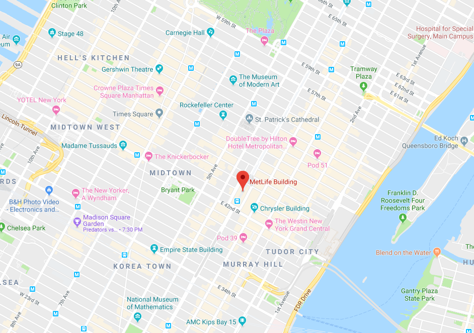

Our location on the map:

Please reach us here for more information:
Phone:212-555-6753
Email:reallyfakeemails@gmail.com
200 Park Avenue
New York
NY 10166
For scripts and other project questions:
mytotallysecondpersonalemail@gmail.com
Follow @CapitanDolphin
Return to the main page